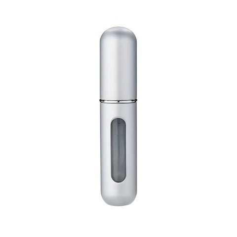
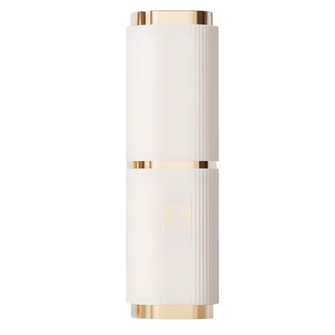
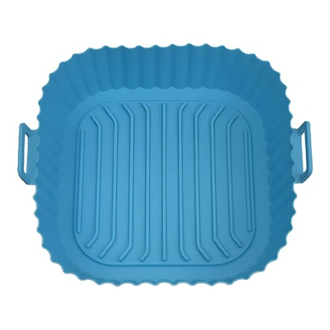
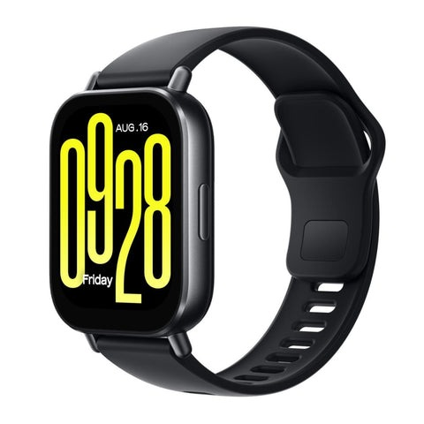

Coffee Maker Digital 12 Tazas, PICM12DN
PICCA · Modelo PICM12DN
El modelo PICM12DN de PICCA está pensado para un uso práctico y funcional. Entre sus características destacan Celulares por Marca Ver Todo Celulares Apple Samsung Xiaomi Honor Motorola Huawei Blu; Ver Todo Celulares; Ver Todo Accesorios para Celular; Cables, Cargadores y BaterÃas.
- Celulares por Marca Ver Todo Celulares Apple Samsung Xiaomi Honor Motorola Huawei Blu
- Ver Todo Celulares
- Accesorios para Celular Ver Todo Accesorios para Celular Cables, Cargadores y BaterÃas Bases y Holders Tarjetas de Memoria AudÃfonos Estuches y Temperados Para Carro Para iPhone
- Ver Todo Accesorios para Celular
- Cables, Cargadores y BaterÃas
- Bases y Holders
- Tarjetas de Memoria
- AudÃfonos
- Estuches y Temperados
- Para Carro
Especificaciones
| Modelo | PICM12DN |
|---|---|
| Marca | Picca |
| Número de parte | PICM12DN |
| Color | Negro-gris |
| Programación | Automática |
| Capacidad | 12 Tazas |
| Función | Limpieza automática / Pausar y servir |
| Pantalla | Digital con reloj |
| Jarra | De vidrio, antigoteo |
| Luz indicadora | SÃ |
| Opción para café frÃo | Sà |
| Modo de café fuerte | Sà |
| GarantÃa | 30 dias por defectos de fabrica |
| Peso | 0.5 kg |
| SKU | UM00OC12 |
| Publicado en Unimart.com | 24-01-26 |
| Feedback | ¿Viste un precio más bajo? Queremos saber. |
Fuente principal: https://www.unimart.com/products/picca-coffee-maker-digital-12-tazas-picm12dn